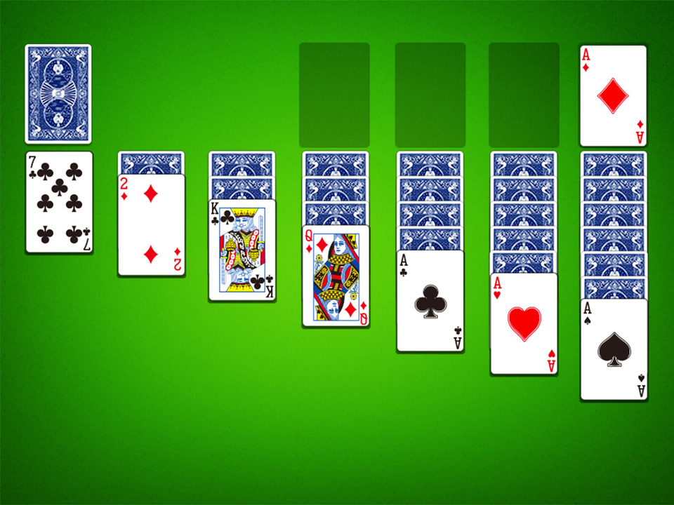

🃏 La Croix d'Honneur – Easy Rules (Solitaire)
La Croix d'Honneur is a solitaire (single-player) card game. The aim is to get rid of all cards by pairing them in matching ranks (for example two Kings, two 5s, etc.).
🎯 Objective
Discard all cards by removing them in pairs of the same rank. If you succeed — i.e. no cards remain — you win!
✴️ Layout (the "Cross")
The game starts with cards arranged in a special cross shape — an inner circle and an outer circle, each with 8 cards (so 16 cards total laid out).

The rest of the cards form a face-down stock (draw pile).
🃏 How to Play – Stages
1. First Stage
- You may only pair the top card of the waste pile (cards you draw and discard) with any of the cards in the inner circle.
- When an inner-circle card is paired and removed, it is immediately replaced by the corresponding card from the outer circle. Cards from the outer circle are not replaced once removed.
2. Second Stage (after stock runs out)
- Once you have drawn all cards from the stock, you may use the waste-pile cards to fill empty spaces in the inner circle (but not necessarily all empty spaces).
- The rule still applies: only the top card of the waste pile may be paired — and only with a card from the inner circle.
3. Final Stage
- When no cards remain in the waste pile (either discarded or moved into the inner circle), you can pair cards from the inner circle among themselves.
- No redeal — you only use the cards you already have laid out.
🏆 Winning the Game
You win when all cards are discarded — meaning there are no cards left anywhere.
💡 Tips for Playing
- Keep an eye on the top of the waste pile — it's your only chance to pair until later stages.
- Try to remove cards from the inner circle quickly to expose more outer-circle cards (more options).
- Be careful: once outer-circle cards are used, no more replacements — plan ahead!.
Brief History
Solitaire games have been played for hundreds of years. La Croix d'Honneur is a classic version from France, and solitaire games are loved around the world for their relaxing and thoughtful play!